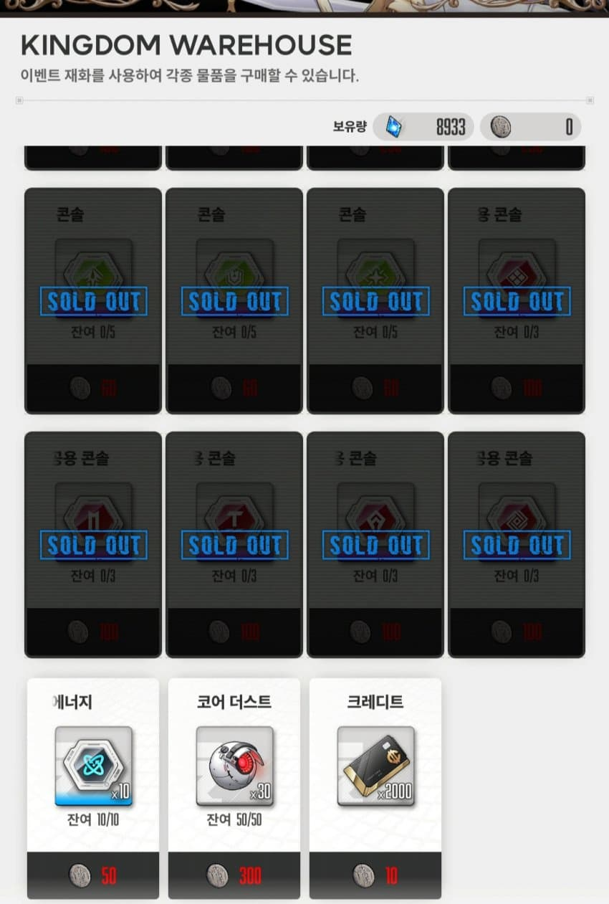
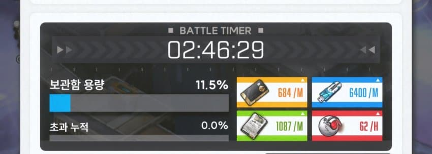
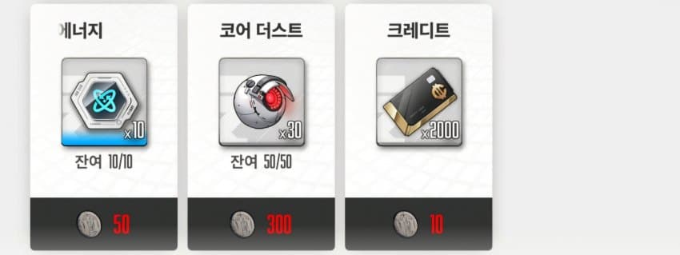

다들 이벤트 상점에서 한정상품을 모두 사고나면 마지막에 코더와 크레딧 중에 하나를 골라서 살거임.
여기서 뭘 선택할지는 당연히 본인 자유지만..
굳이 효율을 따진다면 크레딧이 조금 더 가성비가 좋음.
그 근거로는 전초기지 보상을 확인해보면 편함.

내 전초기지 보상 현황임.
코더는 시간당 62개, 크레딧은 분당 684개임.
편의를 위해 코더를 시간당 60, 크레딧은 분당 700으로 잡고 시간당 42000(60x700)으로 환산하겠음.
즉, 난 코더 60개를 받는 1시간동안 42000의 크레딧을 얻는거임.
다시 이벤트 상점으로 돌아가보겠음.

코더 60개를 구매하려면 이벤트재화 600개가 필요함.
그리고 그 600의 재화를 크레딧을 사는데에 사용하면?
총 120000(60x2000)의 크레딧을 얻을수있음.
전초기지 1시간의 재화를 얻기 위해 구매하는 이벤트상품인데 크레딧은 전초기지(시간당 42000)보다 3배 많은 재화를 얻을 수 있음.
따라서 크레딧을 사는게 조금 더 효율적인 거임.
물론 이건 어디까지나 전초기지 레벨에 따라 달라지는 내용이고, 크레딧보다 코더가 더 중요한 시기의 니붕이들에겐 해당되지 않을 수 있음.
그럼에도 굳이 이 팁글을 쓰는건, 이벤트상점은 무조건 코더! 로 알고있는 니붕이들이 있는 것 같아서 써봤음.
적당히 둘을 저울질해보고 좀더 본인에게 필요한 재화를 구매하길 바라겠음.